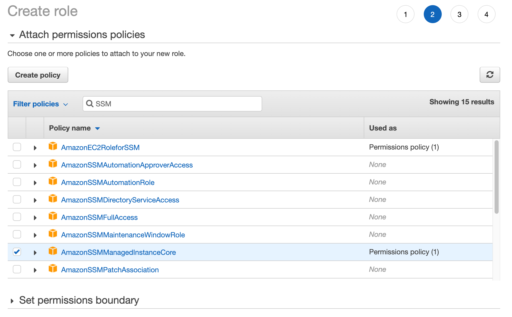

준비¶
실습을 위한 기초 환경을 만들어 놓습니다. 짧지 않습니다. Buckle up!
사용자 환경¶
웹 브라우저¶
웹 브라우저만 잘 갖추었다면 만족할 수 있습니다. Microsoft Edge, Firefox, Google Chrome이 적합하다고 할 수 있습니다. 다시 말하면, Gecko 엔진과 Chromium 엔진을 사용하는 웹 브라우저라면 좋습니다.
CLI¶
추가적으로 command line interface가 있으면 더 좋을 수 있습니다. 하지만, 기본적으로 이번 실습 과정에서는 Web Console을 중심으로 놓고 설명을 합니다. 여러분께서 사용하고 있는 운영체제에서 CLI를 지원하고 그 CLI에 AWS CLI를 설치할 수 있으면 됩니다. 만약 그런 환경이 갖추어지지 않았다거나 굳이 그런 수고를 들이고 싶지 않는다면 AWS에서 제공하는 Cloud9을 사용하는 것을 추천합니다. 혹은, EC2 instance 하나를 만들고, session manager로 접속해서 사용하셔도 무관합니다. 모두 결국에는 같은 환경입니다.
AWS 환경 구축¶
IP (대역) 할당¶
VPC과 Subnet을 다음의 같이 미리 만들어 놓습니다.
서로 다른 region에 VPC를 배치하며 각 VPC는 하나 혹은 두 개의 Subnet을 보유하게 됩니다.
각 region에서 가용영역(Availability Zone)은 일관성 있게 하나만 선택합니다.
본 실습의 예제에서는 서울 region의 경우, ap-northeast-2a (apne2-az1)을
아일랜드 region의 경우, eu-west-1b (euw1-az2)을 선택했습니다.
다음의 표는 각 구성이 가져가는 IP 관련된 정보입니다.
목적은 각 VPC와 Subnet이 가지는 CIDR 영역이 겹치지 않게 하기 위함입니다.
이것은 예제일 뿐입니다. 각자가 더 창의적인 접근을 할 수 있으면 그것을 선택하시면 되겠습니다.
| Region | VPC | Subnet | EC2 Instance | Additional Subnet |
|---|---|---|---|---|
| Region A (Ireland) | VPC 1 | Subnet 1-1 | Instance 1-1 | |
| 10.10.0.0/16 | 10.10.1.0/24 | 10.10.1.10 | ||
| Region A | VPC 3 | Subnet 3-1 | Instance 3-1 | |
| 10.30.0.0/16 | 10.30.1.0/24 | 10.30.1.10 | ||
| Region B (Seoul) | VPC 2 | Subnet 2-1 | Instance 2-1 | Subnet 2-2 |
| 10.20.0.0/16 | 10.20.1.0/24 | 10.20.1.10 | 10.20.2.0/24 | |
| Region B | VPC 4 | Subnet 4-1 | Instance 4-1 | |
| 10.40.0.0/16 | 10.40.1.0/24 | 10.40.1.10 |
위 정보를 기초로, 두 region에 VPC들과 Subnet 그리고 EC2 Instances를 생성합니다. 생성이 완료되었다면, 이제 준비가 끝났습니다.
VPC 및 Subnet 생성¶
위의 IP 할당표를 참조하여 각 region에 VPC와 Subnet을 생성합니다.
여러분께 VPC는 어떻게 만들고 Subnet은 왜 묵시적 라우팅이 가능한지 등에 대한 이야기를
다시 하는 건 매우 지루한 일이 될 것입니다.
다만, VPC를 생성하고 나서 하나의 옵션을 켜야 합니다.
DNS 호스트 이름¶
생성한 VPC를 선택하고, '작업' 메뉴에서 'DNS 호스트 이름 편집'을 선택해서 'DNS 호스트 이름'을 활성화 해야 합니다. 이는 Session Manager로 EC2 instance에 접속하기 위한 Systems Manager의 요구사항입니다.


Private DNS 생성 (optional)¶
본 실습에서 이 부분은 다루지 않습니다. 하지만, 만약 이에 대한 관심이 있으시다면 위의 웹 링크로 안내하는, 공식 문서를 읽어보시는 것을 추천합니다.
VPC endpoint 생성¶
이 과정은 반복적이어서 인내가 조금 필요합니다.
일단 'VPC endpoint 생성'만큼은 끝까지 읽고 시작합시다.
Systems manager의 session manager를 통하여 EC2 instance에 접근하기 위하여 VPC에 endpoints를 생성합니다, 3가지나 됩니다. session manager로 EC2 instance에 접근하는 일반적인 방식은 대상이 되는 EC2 instance가 public subnet에 배치되어 있어야 합니다, 그리고 pubic IP를 지니고 있어야 겠죠. 하지만, 본 실습의 구성에서는 그런 행운같은 설정은 존재하지 않기에, 우리는 VPC endpoint에 Systems Manager가 접근할 수 있도록 설정을 해 놓아야 합니다. 그렇습니다, private subnet이 있고, 그 안에 EC2 instance가 있는 조건에서 필요한 조치입니다.
Endpoint를 생성은, web console에서 'VPC' 서비스를 선택하고 나타나는 왼쪽 메뉴에서 'Endpoints'를
선택한 다음, Create Endpoint
버튼을 클릭하여 시작할 수 있습니다.
만들어야 하다는 endpoints는
com.amazonaws.$REGION.ssm,
com.amazonaws.$REGION.ssmmessages,
com.amazonaws.$REGION.ec2messages
이렇게 3가지입니다.
위 VPC endpoints는 EC2 instances가 배치된 모든 VPCs와 subnets에 적용해야 합니다. 본 과정의 경우에는 아일랜드 region의 VPC 1/subnet 1-1과 VPC 3/subnet 3-1 그리고 서울 region의 VPC 2/subnet 2-1과 VPC 4/subnet 4-1이 해당됩니다.

아래의 참조문서에서는 3가지 endpoints를 작성하는 것을 설명하고 있습니다.
참조
Systems Manager를 사용하여 인터넷 액세스 없이 프라이빗 EC2 인스턴스를 관리할 수 있도록 VPC 엔드포인트를 생성하려면 어떻게 해야 합니까?
How do I create VPC endpoints so that I can use Systems Manager to manage private EC2 instances without internet access?
하지만, 이 반복적이고 非생산적일 것만 같은 이 작업을 직접 한 땀 한 땀 만들어 내는 것은 매우 숭고한 일입니다. (다시) 하지만, 자신의 시간은 너무도 소중하고 이 과정이 전반적인 학습행위에 크게 도움이 되지 않는다고 판단이 든다면, 아래의 CloudFormation을 가지고 배포하는 것을 고려해 볼 수 있습니다.
Region A:
VPC1 CF Template,
VPC3 CF Template.
Region B:
VPC2 CF Template,
VPC4 CF Template.
각 template은 region에 대한 정의는 수록되어 있지 않습니다. 각각 적합한 region에 배포하기 기대합니다. console.aws.amazon.com/cloudformation에 접속하여 다른 모든 서비스가 그렇듯 region을 전환하며 배포하시면 되겠습니다.
IAM 생성¶
Session manager가 EC2 instance에 권한을 가지고 접근할 수 있도록 조치합니다.
생성하는 IAM은 EC2 하위 Policy, AmazonSSMManagedInstanceCore를 포함하면 됩니다.
여기에서 생성한 IAM role은 EC2 instance를 생성할 때 지정해야 합니다.

 당연히 그렇겠지만, EC2를 선택합니다. 'use case'도 EC2를 선택합니다.
당연히 그렇겠지만, EC2를 선택합니다. 'use case'도 EC2를 선택합니다.

Policy를 선택할 때, AmazonEC2RoleforSSM을 지정하셔도 정상 동작합니다. 하지만, 이 IAM Role은
곧 사라지게 됩니다. AmazonSSMManagedInstanceCore로 지정하고 기억 속에도 그렇게 남깁시다.
 원하는 이름으로 Role name을 지정하고 생성하면 이 단계는 완료됩니다.
원하는 이름으로 Role name을 지정하고 생성하면 이 단계는 완료됩니다.
EC2 instances 생성¶
그리고, 필요한 EC2 instance들을 생성합니다. 본 예제에서는 Ubuntu 18.04 LTS로 일부 특징적인 예제가 있어, 이것을 추천합니다. 만약 다른 AMI를 선택하신다면, Python이 별도의 설치 없이 동작하는지 확인하시기 바랍니다. 앞으로 진행될 실습에서 Python3 명령 한 줄이 나옵니다. 간이 웹 데몬을 실행하기 위함입니다. (물론, Python2에서도 가능합니다)
그리고 Session Manager를 위한 Systems Manager Agent가 미리 설치된 AMI를 선택하는 것이 상당히 유리합니다. 그 목록은 다음과 같습니다(Linux 한정, Windows 제외).
- Amazon Linux
- Amazon Linux 2
- Ubuntu Server 16.04
- Ubuntu Server 18.04
- Amazon ECS-Optimized
필요한 최소 instance의 수(數)는 총 넷입니다.
만약 충분한 시간이 지금 있다면, VPC 4의 Subnet 4-1에 배포할 Instance 4-1, 단일 instance 대신
Auto scaling group으로 작성해 보신다면 보다 완벽한 실습이 되겠지만, 반드시 필요한 것은 아닙니다 :-)
EC2 instance를 만들면서 요구되는 Key를 미리 만들어 두든, instance 생성시 만들든 잘 보관해 둡시다. 서로 다른 VPC에 있는 instances 간의 접속 시험 때 사용할 수 있습니다.
Systems Manager 설정¶
Systems manager의 설정은 따로 필요하지 않습니다. 생성한 IAM role이 EC2 instance에
잘 적용되어 있다면, Systems Manager 아래, 왼쪽 아래 메뉴,
'Instances & Nodes'에서 'Session Manager'를 선택, 전환되는 화면에서
Start Session을
선택하고 나타는 화면에서 생성한 EC2 instances가 'Target Instances'에 나타나면 준비가 완료된 것입니다.

혹은, 아래의 화면화 같이 'Connect to your instance'에서 'Session Manager'를
선택했을 때 경고 혹은 오류 화면이 등장하지 않고 Connect 버튼이 활성화 되면 됩니다.

Network Load Balancer 생성¶
VPC 4에 Network Load Balancer를 배치합니다. 해당 NLB는 비록 단 하나의 EC2 instance에 연결되지만, 우리의 시연에는 큰 문제가 없습니다. 다만, Target group에 대한 health check 시, 80이나 443 (우리는 지금의 환경에서 제대로된 웹 데몬을 항상 띄우지는 못 합니다) 포트가 아닌, 기본으로 오픈되어 있는 TCP 22번으로 설정하는 것이 필요합니다.
NLB 설정에 대한 자세한 방법은 아래에 단계별로 설명하겠습니다.
시작하기¶
AWS 서비스 중에서, EC2 아래에 Load balancing이라는 메뉴가 있습니다.
하위, Load balancer를
클릭하고 들어가면, Create Load Balancer
를 클릭하면서 생성을 시작할 수 있습니다.

ALB / NLB/ CLB¶
우리는 반드시 NBL, Network load balancer를 선택해야 합니다. 나중에 알게 되겠지만, 이 load balancer를 PrivateLink를 위해 사용될 예정인데, PrivateLink의 구성에서는 반드시 NLB가 필요하기 때문입니다.

NLB 기본 설정¶
이 단계에서 신경을 써야 할 부분은, 'Scheme'를 'Internal'로 선택해 주는 것입니다. 기본값은 'internet-facing'입니다.

Listeners는 Load Balancer Protocol: TCP, Load Balancer Port: 80 으로 유지하고, Availability Zones는 선택할 수 있는 것이 하나 뿐이기 때문에 따로 신경써야 할 부분은 없을 듯 합니다. VPC 4와 subnet 4-1을 선택합니다.
Configure Routing¶
새로운 target group을 만들어야 합니다. Target type을, 어떤 것을 해도 무관하겠지만, 마음 편하게 Instance를 선택하는 길을 아래의 예제에서 보여 주고 있습니다. 그리고 Protocol: TCP, Port: 80을 선택했습니다.
Health checks의 'Advanced health check setting' 부분은 중요한데, 우리의 target group은 instance 생성 직후 외부와의 통신이 불가능하기 때문에 어떤 소프트웨어도 설치할 수 없습니다. 그래서, target group으로 forward하는 TCP 포트로는 health check를 성공할 수 없습니다. 따라서, 기본값 'Port: traffic port'이 아닌 'override'를 선택해서 모든 Linux instances에서 대체로 열려있는 22 번 포트를 지정합니다.
나머지는 주어진 값을 사용해도 무관합니다.

여기까지 입력하고 다음으로 넘어갔을 때 별다른 문제를 발견하지 못 했다면, Load balancer에 관한 설정을 잘 끝내신 것입니다.
NAT Gateway 생성¶
VPC 2의 Subnet 2-2에 해당 설정을 합니다.
CloudFormation template을 사용했다면 이미 배포되어 있습니다.
Internet Gateway 생성¶
VPC 2에 해당 설정을 합니다.
CloudFormation template을 사용했다면 이미 배포되어 있습니다.
라우팅 테이블¶
지금은 따로 설정하지 않습니다.
다만, NAT gateway와 Internet Gateway를 위한 설정은 아래와 같이 진행합니다.
CloudFormation template을 사용했다면 이미 설정되어 있습니다.
Public Subnet, Subnet 2-2¶
VPC 2에 라우팅 테이블을 만들어 줍니다. 이 라우팅 테이블은, 0.0.0.0/0로 가는 길에 Internet gateway가 지정됩니다. 그리고 이 라우팅 테이블은, Subnet 2-2에 지정합니다.
Private Subnet, Subnet 2-1¶
VPC 2에 라우팅 테이블을 만들어 줍니다. 이 라우팅 테이블은, 0.0.0.0/0로 가는 길에 NAT gateway가 지정됩니다. 그리고 이 라우팅 테이블은, Subnet 2-1에 지정합니다.
보안 그룹¶
보안 그룹(Security Group)은 모두 열어 둡니다.
| Type 유형 | Protocol 프로토콜 | Port range 포트 범위 | Source 소스 | |
|---|---|---|---|---|
| All traffic 모든 트래픽 | All 전체 | All 전체 | Custom 사용자 지정 | 0.0.0.0/0 |
Custom 사용자 지정 대신 Anywhere 위치 무관을 선택할 수도 있습니다.
본 실습의 목표는 보안에 관한 조정이 포함되어 있지 않습니다.
위 설정은 본 실습을 위한 설정입니다. 만약 정교한 설정을 한다면 생각할 것이 많겠지만, 대부분 그 생각은 일반적일 것입니다. 제가 알리고 싶은 것은 Session Manager를 위한 security group의 설정입니다. AWS Systems Manager > User Guide > Step 6: (Optional) Create a Virtual Private Cloud endpoint를 참조할 수 있습니다.
完